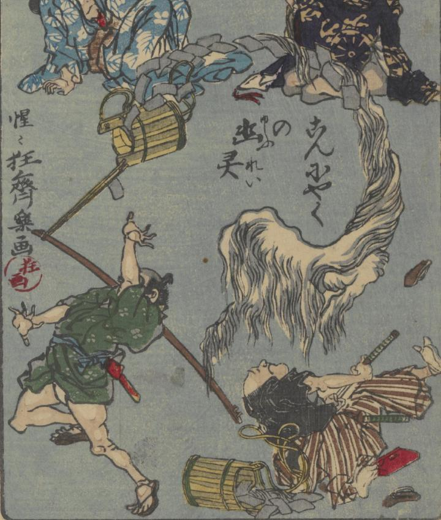

蒟蒻の中から、蒟蒻の幽霊が現われ、人が驚いている。長い毛束のような造形で、頭と手があるようにみえる。尾は、蒟蒻に絡まって巻いた状態となっている。
著作者：河鍋暁齊／出典：親書誌：U426_nichibunken_0367：狂斎百𠷰；キョウサイ ヒャクズ／日付：2014／資源識別子：U426_nichibunken_0367_0020_0000
Copyright (c)2010- International Research Center for Japanese Studies, Kyoto, Japan. All rights reserved.